Press conference by Siegfried MUREŞAN (EPP, RO) and Carla TAVARES (S&D, PT), co-rapporteurs on the Multiannual Financial Framework (MFF) negotiations
 22:42
22:42
Download this video
Description
Co-rapporteurs Siegfried MUREŞAN (EPP, RO) and Carla TAVARES (S&D, PT) hold a press conference on the Multiannual Financial Framework (MFF) negotiations. This transcription is a result of an automatic process. Please check against delivery.
Event date: 06/10/2026
Copyright: © European Union 2026
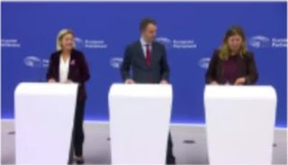
00:00:00SOUNDBITE (Original) Press Officer, Okay. Let's start again. Hello, everyone. Welcome to this press briefing on the MFF, the EU's long-term budget. Thank you so much for joining us. Tomorrow at the plenary at 9 o'clock, we will have a debate as well on the topic. And today, here, we have with us the two co-operators from the Parliament, Mr. Siegfried Muresan and Ms. Carla Tavares, who will give you brief introductory remarks, and then we go to questions. Interpretation is available in English, French, German, Romanian, and Portuguese. Mr. Muresan, the floor is yours.
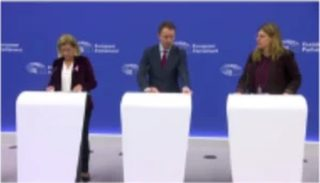
00:00:35SOUNDBITE (Original) Siegfried MUREŞAN (EPP, RO),co-rapporteur, Thank you very much. Good afternoon, everyone. So, look, we are happy to tell you where we stand as a European Parliament and what we expect from the Council in the next two weeks. The fact is, we as a Europe Parliament have had a clear position on the multi-annual financial framework adopted by the plenary with absolute majority in April, and we are still waiting for a position of the Council. If the Council believes that agreeing very late, before all deadlines are passing on a council's position on the next MFF, and then the parliament will vote it without changes and without any conditions under the pressure of time, then the European Council is wrong.
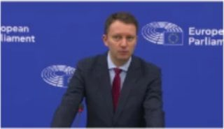
00:01:16SOUNDBITE (Original) Siegfried MUREŞAN (EPP, RO),co-rapporteur, This is a European parliament in which members of parliament exert their mandate freely. It is a parliament that is very diverse. And we have articulated. A clear position of the parliament supported by a large majority of pro-European groups, and members of the European Parliament will only vote in favour of the MFF if the demands of the Parliament are included to a satisfactory degree. We know that the end result will be a compromise, but for a compromise to be successful, Council needs to take Parliament's position on board.
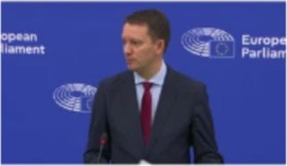
00:01:53SOUNDBITE (Original) Siegfried MUREŞAN (EPP, RO),co-rapporteur, So we believe that next week's European Council is the moment when the heads of state and government shall finally commit seriously to the MFF, work thoroughly over the course of the council, and also have an ambitious plan to reach a council's position by the end of the year so that early next year we can hold negotiations between council and parliament. Tomorrow morning, we'll have a debate in plenary, and the debate will confirm. The positions of the majority of the position supported by a very wide majority of members
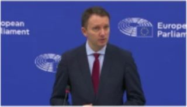
00:02:33SOUNDBITE (Original) Siegfried MUREŞAN (EPP, RO),co-rapporteur, We are also looking forward to the so-called negotiating box that the Irish presidency will put forward. And we believe there is still time for the Irish Presidency to avoid some mistakes which will bring us back to square one, back to where the Irish presidencies started on the 1st of July. The biggest mistake that the Irish presidency absolutely has to avoid is to make unjustified cuts to these, to the figures in the negotiating box. Unjustified cuts would make Europe weaker, would not solve any of the challenges that we are facing and would severely undermine an inter-institutional good cooperation between parliament and council.
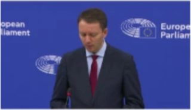
00:03:20SOUNDBITE (Original) Siegfried MUREŞAN (EPP, RO),co-rapporteur, We are aware that member states are financially and politically not willing to increase their contributions to the EU budget significantly, but we believe that there is a way out such that member States do not have to contribute much more to the E.U. Budget, but we can still fund our priorities sufficiently and that way out is own resources. The European Parliament has three ideas for own resources which would make the funding of the union more stable, more predictable, more transparent, and more European.
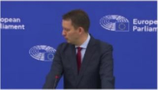
00:03:53SOUNDBITE (Original) Siegfried MUREŞAN (EPP, RO),co-rapporteur, These are the digital levy, the crypto profits made with cryptocurrencies and online gaming and gambling. Particularly, the digital levee, depending on the way in which it is applied, can be a significant source of funding to the EU budget. This being said, just as a last sentence, this being said. We advise the council to stop projecting publicly the impression that the EU budget is increasing in an unjustified manner, while at national level, governments are obliged to make cuts to their budgets.
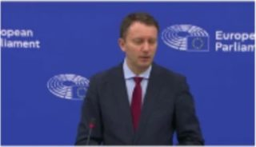
00:04:33SOUNDBITE (Original) Siegfried MUREŞAN (EPP, RO),co-rapporteur, Yes, national governments do have to consolidate their public budgets, but even in this context of fiscal consolidation, national budgets are increasing in absolute terms much more than the EU has ever increased. Over the course of the implementation of this MFF, the burden upon member states was reduced. The total share of the MFF over the course of this the total share of the the Mff in comparison to the GNI of member states is declining gradually from year to year.
- 00:05:06
SOUNDBITE (Original) Siegfried MUREŞAN (EPP, RO),co-rapporteur, So economies throughout Europe are growing and national governments are not transmitting that growth and that surplus, that additional. Revenues which they have at national level to the EU budget. So the perception which some member states are trying to create that the EU Budget is too big and it is increasing significantly while at national-level fiscal consolidation is undergoing is wrong. The figures contradict them. And over the course of recent years, national budgets have increased much more significantly than the EU's budget has.
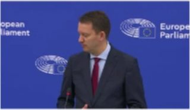
00:05:43SOUNDBITE (Original) Siegfried MUREŞAN (EPP, RO),co-rapporteur, So we believe it is high time for the heads of state and government to do what we've been doing in the European Parliament as well to attempt to try to agree on a budget which is good for Europe and to move away from only the national viewpoint where every prime minister tries to contribute as little as possible to the union and benefit as much as possible. This doesn't make Europe stronger, this isn't European and we believe that we should together, Parliament and Council agree on the budget which is in line with the priorities that we've set for ourselves.
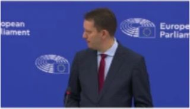
00:06:16SOUNDBITE (Original) Carla TAVARES (S&D, PT), co-rapporteur, Thank you Siegfried, thank you to be here. I will speak in Portuguese now. Is much more than a financial instrument, it is a political instrument that will define what the priorities of the Union are for the next seven-year cycle. The Parliament was absolutely clear in the mandate that gave the two correspondents when we had the opportunity to vote the interim report and therefore we will not accept speeches and positions that say that to have cohesion we cannot have competitiveness, to have the European Social Fund, we cannot have climate.
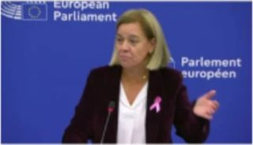
00:07:14SOUNDBITE (Original) Carla TAVARES (S&D, PT), co-rapporteur, The cohesion, the competitiveness, the agriculture, the security, the defence, the important issues are two sides of the same coin. And therefore the Parliament, which continues to say, continues to pull together the Member States and continues to affirm very clearly, is that we have to have more ambition, we can only have more ambitions. It is what the Europeans expect of us, with the vote they gave in the different political parties that are represented in this Parliament, it is what they expect to happen.
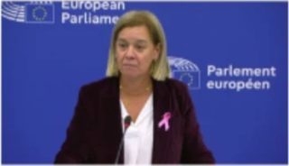
00:07:40SOUNDBITE (Original) Carla TAVARES (S&D, PT), co-rapporteur, I know that the European Union is in conditions to respond to the challenges that we have ahead, and this is not done with more contribution from Member States, it is naturally done with new resources, and that for the Parliament is absolutely clear and we have said it several times. I also wanted to make a reference, because little is said about this, with the presentation of the proposal, we are a little worried and that it is held with the Global Euro and the Edding 3. Foreign policy be massacred and amputated, even because it is very expected in relation to the European Union.
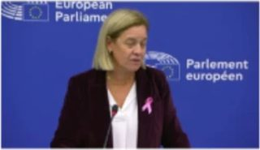
00:08:20SOUNDBITE (Original) Carla TAVARES (S&D, PT), co-rapporteur, We speak extensively of the very President of the European Commission, very well, speaks of the issues and the challenges we have in the area, with the Wedding (sic) 3 in particular, with the extension, with Global Europe. Therefore, also the pilgrimic idea that we are going to amputate the Wedging 3. To make it survive the Wedding 2 and Wedding 1, which is also not for the Parliament, and I think we are very clear in the interim report that we will not accept, naturally, that this will happen.
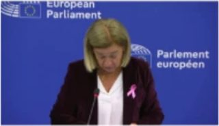
00:08:47SOUNDBITE (Original) Carla TAVARES (S&D, PT), co-rapporteur, Therefore, the next few days are absolutely decisive moments, we even have the Negobox being worked on by the Irish presidency. The Parliament is where it has always been, the two reporters have a mandate that was given to the Parliament. And we didn't see it naturally in a very positive way. And it will be difficult for this Parliament to have a next financial framework proposal that is even lower than the Commission's proposal and what is the level of the current financial framework, because this will not naturally allow us to respond to the ambition.
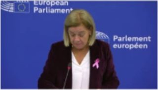
00:09:25SOUNDBITE (Original) Carla TAVARES (S&D, PT), co-rapporteur, And we cannot forget, at the top of our heads, that the need to, from 2028, have to reimbursed the Next Generation New. And naturally, that is also a concern of the Parliament, and we return to the beginning, Therefore, there is ambition and the payment of commitments is not done without resources. This is how to manage our lives, and therefore the need and the need to continue to insist that we need to work around our own resources. The Parliament itself presented three more proposals that can be put together, the proposals that were presented by the Commission.
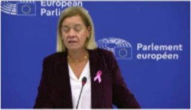
00:09:59SOUNDBITE (Original) Carla TAVARES (S&D, PT), co-rapporteur, We are aware that one of them will certainly be easier. Even due to the speed of implementation in relation to the other proposals. Therefore, what we ask for and what we are aware of is that we cannot deny to the party a science that we do not know. Therefore, we have to work around everything that is proposed, with our own resources, to find the best solutions on the penalty of essentially penalising the Europeans and not being able to respond to the challenges we have ahead. And just look at the moments we live now, with fuel, with energy. And much more, which unfortunately can not wait for us in this seven-year cycle and which we do not even get to see at this distance today. Thank you very much.
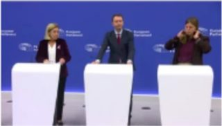
00:10:45SOUNDBITE (Original) Press Officer, Thank you very much. Now we go to your questions. Please state your name and your media when you ask a question.
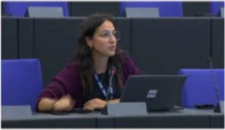
00:11:16Q&A Question on the impact of Spanish snap elections on EU negotiations, particularly the role of Prime Minister Sánchez in defending the European Parliament's positions.
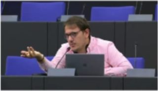
00:14:05Q&A Question about meeting the November deadline for a common position on the ANRPP and potential adjustments to accelerate the negotiation process.
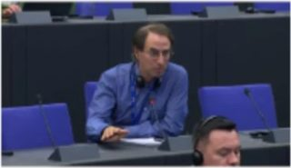
00:16:39Q&A Question on upcoming negotiations on the EU budget, including the Irish presidency's proposal , rumored to be less than 10%, and historical context of budget negotiations
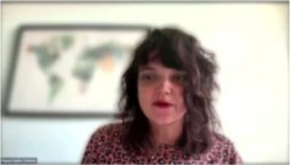
00:18:49Q&A Question on EU debt rollover as a potential deal-maker and Parliament's stance and question on the risk to MFF majority due to EPP-far-right alliances on environmental files
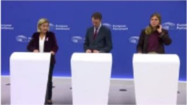
00:22:21SOUNDBITE (Original) Press Officer, Thank you. Any last questions in the room or online? I don't see any. In that case, thanks for joining us. Please follow the debate tomorrow on the MFF at the Plenary, starting at 9, and follow our channels. The co-operators will, of course, have reactions to the NEGO box when it comes out. Thank you very much. Thank you very much.
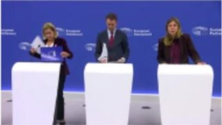
00:22:42End
Reference: I295558